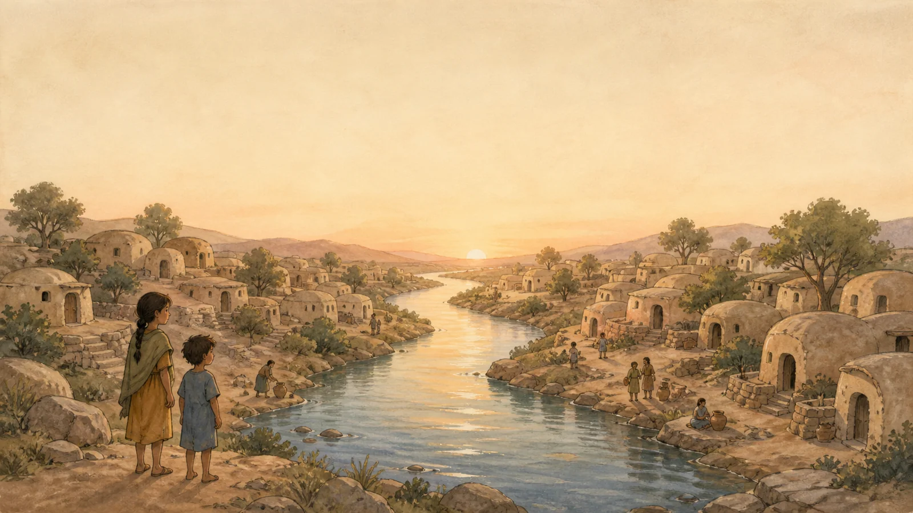
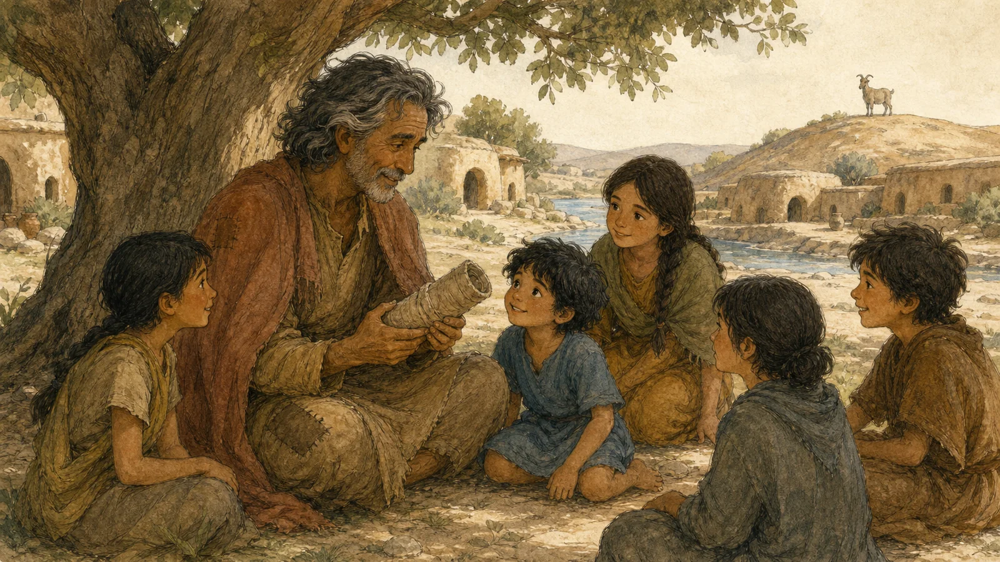
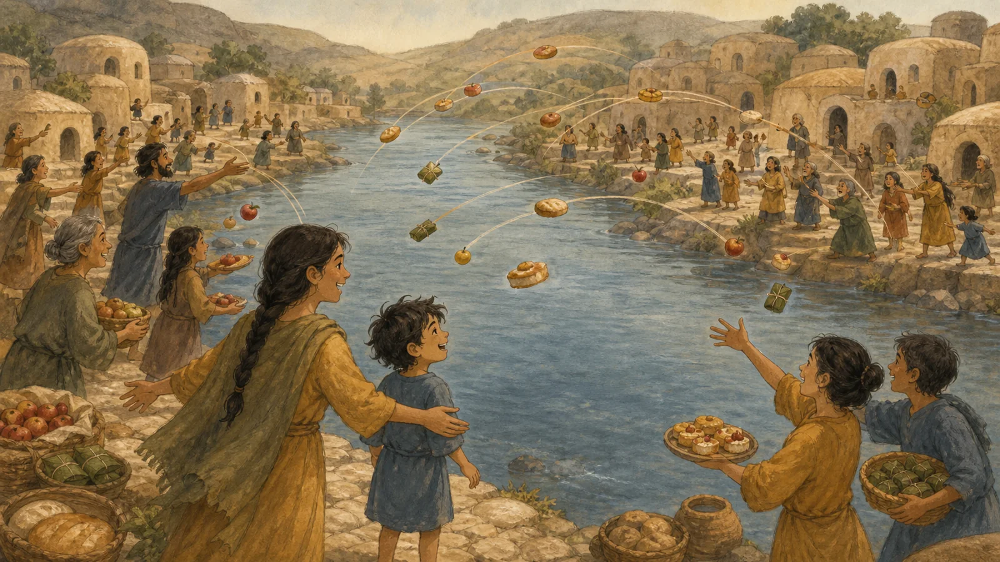
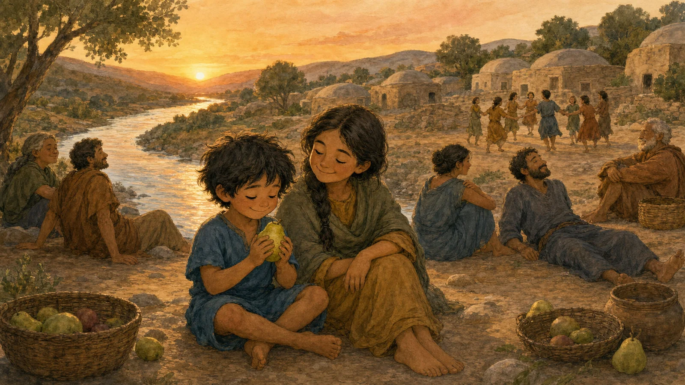

By lunchtime, the boy had already done enough things to make an ordinary day feel jealous.
He had raced six children across the lawn, lost one slipper near the breakfast tables, found it under somebody else's chair, eaten half a watermelon slice, won a blue ribbon for carrying a lemon in a spoon, splashed in the pool, and gone down the long slide fourteen times.
He would have gone down a fifteenth time, but his mother caught him by the towel.
“Enough,” she said. “Everyone is going back to the cottages.”
This was true. All around the resort, doors were opening and closing. Parents carried sleepy toddlers. Older children dragged wet towels behind them. Uncles discussed the morning games as if they had taken part in an important sporting championship. Aunties gathered hats, water bottles, sandals, and children who did not belong to them.
Every summer, families from their community came to this little town beside the sea. There were so many of them that, for one weekend, they seemed to fill the whole resort. The picnic began at seven in the morning and would continue until midnight. After the afternoon rest there would be another visit to the beach, then music and dancing, dinner, games, and several surprises that the adults refused to explain.
The boy wanted to experience all of it immediately.
“I am not tired,” he said, while yawning so widely that his mother could see every tooth in his mouth.
Their cottage was small but pleasant. It had one bedroom, a sitting room with a couch, and a little balcony facing a row of silver-green trees. Beyond the trees, the sea flashed whenever the wind moved the branches apart.
The boy's mother pulled the curtains halfway closed.
“You need a nap,” she said.
“I don't.”
“You do.”
“What if everybody else goes swimming?”
“Everybody else is resting too.”
“What if they are only pretending?”
“Then they are pretending very quietly.”
The boy listened. From the neighboring cottages came almost nothing: a door shutting, a tap running, and somewhere far away the lonely squeak of a swing.
His mother pointed toward the couch. “Lie down. When you wake up, we will go to the beach again. After that there will be the cultural program, music, dancing, dinner, and the night games. You cannot enjoy any of those things if you are falling asleep on your feet.”
“How long?” he asked suspiciously.
“Two hours.”
The boy stared at her.
Two hours!
It sounded enormous. Two hours was probably enough time for all the other children to swim across the pool, discover a treasure under the slide, eat every ice cream in the resort, and build a castle on the beach without him.
“Two whole hours?” he cried.
His father had been listening from a chair near the balcony. Until then, he had been pretending to look at something on his phone. Now he put it aside.
“Are you worried about Tua War?” he asked.
The boy stopped complaining.
“About what?”
“Tua War.”
“Mum said two hours.”
“That is what I said. Tua War.”
“No, you didn't.”
“Of course I did.” His father looked astonished. “Have you never heard the story of Tua War?”
The boy glanced at his mother, who pressed her lips together to hide a smile.
“Is it a real war?” he asked.
“It was the first and greatest war the people of Tua had ever seen.”
“Were there arrows?”
“Many things flew through the air.”
“Was there fire?”
“There were certainly some very hot things.”
The boy climbed onto the couch without being asked.
His father sat beside him. “You will need to be comfortable. It is not a short story.”
“How long is it?”
“That depends on whether anyone interrupts.”
The boy lay down at once.
His mother gave his father a look that said she knew exactly what he was doing. Then she went into the bedroom, closed the door, and finally took the rest she had been trying to arrange for everyone else.
The boy's elder sister had planned to rest too. She was nearly fifteen and considered herself much too old for tricks involving naps and stories. But she paused on her way to the other end of the couch.
“What war?” she asked.
“You have heard it before,” said her father.
“I don't remember it.”
“Then you had better lie down and help me make sure your brother listens.”
She rolled her eyes, but she lay beside her brother anyway.
Their father lowered his voice.
“Long ago,” he began, “when people knew the world was wide but did not yet know how wide, there was a place called Tua.”
The Voyager Returns

A river ran through the middle of Tua.
It was neither the widest river nor the deepest river in the world, but it was the most important river the people of Tua knew. They drank from it, washed in it, crossed it, fished in it, and sat beside it on hot afternoons with their feet in the water.
They did not say that one side was better than the other. They did not even have separate names for the two sides. Both banks, all the houses, every field and every tree belonged to Tua.
Most people in Tua remained there all their lives. They learned what their parents knew and added whatever they discovered for themselves. But every so often, someone would look past the hills and wonder what might be hiding beyond them.
Such a person was called a voyager.
Some voyagers returned after a season. Some returned after many years. Some never returned at all.
Luro returned.
He came walking down the northern path one morning with salt in his hair, patches on his coat, and a long tube wrapped in cloth under his arm. Children spotted him first and ran through Tua shouting his name.
“Luro is back!”
“The voyager is back!”
“He has brought a pipe!”
“It is not a pipe,” Luro told them.
“Then what is it?”
Luro unwrapped it carefully. “A seeing tube.”
He showed them how to hold it to one eye. The child who tried first looked toward a goat on the hill and screamed because the goat suddenly seemed close enough to lick her nose.
By midday nearly everyone in Tua had gathered around Luro. They asked about deserts and ports, forests and cities, strange animals, enormous ships, and foods with names they could not pronounce.
Luro answered what he could. Then his face grew serious.
“I saw something else,” he said. “I saw a war.”
Nobody spoke, because nobody knew whether a war was a creature, a storm, a dance, or something one cooked in a pot.
At last an old man asked, “Was it bigger than a whale?”
“A war is not an animal,” said Luro.
“Does it grow in the ground?” someone asked.
“No.”
“Can you eat it?”
“Certainly not.”
“Then why did you bring it up before lunch?” asked the old man.
Everyone agreed this was a sensible question.
Luro sat beneath a tree and told them what he had seen.
His boat had been far out on the water when he noticed flashes on the shore. Through his seeing tube, he saw people in one region throwing fire and arrows at people in another region. Things flew in both directions. Smoke rose. People ran and shouted.
Luro had stayed far away. Days later, when he reached land at a safer place, he asked the local people what had happened.
“War,” they told him.
They explained regions to him. They explained enemies. They explained that each group wanted to defeat the other.
The people of Tua listened carefully to Luro's description.
Then they asked him to explain it again.
“Why did one region throw fire at the other?” asked a farmer.
“Because the other region was the enemy,” said Luro.
“Why were they enemies?”
Luro repeated what the people outside had told him.
“But why?” asked a potter.
Luro tried another explanation.
“But why?” asked a fisherwoman.
Luro tried a third.
“But why?” asked all the children.
Luro rubbed his forehead. He had understood every word the outsiders used. Yet now that he had returned to Tua, the whole idea had become difficult to understand again.
The old man leaned on his walking stick.
“So,” he said slowly, “people on one side throw things at people on the other side?”
“Yes.”
“And the other side throws things back?”
“Yes.”
“And they continue until one side cannot continue?”
“Something like that.”
The old man considered this.
“We could do that.”
Luro sat up. “Do what?”
“Have a war.”
The crowd began talking all at once.
Luro nearly dropped his seeing tube. “I did not tell you about war so that we could have one!”
“Of course not with fire and arrows,” said the old man. “That would be foolish.”
“Very foolish,” everyone agreed.
“We could throw fruit,” the old man continued.
The crowd became quiet.
“Fruit?” said Luro.
“And food,” said a woman who baked small round loaves. “Fruit alone is not a proper meal.”
“We would need two regions,” said the potter.
Everyone looked around Tua. It had never had two regions before.
Then a child pointed at the river.
That was how Tua One and Tua Two received their names.
No one could remember afterward why the eastern bank became Tua One and the western bank became Tua Two. The people on both sides insisted that their own bank had been named first.
But the important matter was settled: at sunrise the next day, Tua would have its very first war.
Preparing for War

That evening, every kitchen in Tua became busy.
People washed fruit, baked bread, cooked vegetables, wrapped cakes in broad leaves, and tied food into packets that could survive a short flight through the air. Nobody had ever prepared for war before, so nobody knew how much food was required.
They made far too much.
The people of Tua also needed rules.
They agreed that no stones could be hidden inside bread, no sour fruit could be thrown on purpose, and no packet could contain anything that the thrower would refuse to eat.
Most importantly, food could never be wasted.
Anything that landed safely on the opposite bank had to be eaten by someone on that side. If a person became too full to eat or too tired to continue, that person had to lie down away from the riverbank.
At sunset, the side with more people still standing and throwing would win.
“What does the winner receive?” Luro asked.
Nobody had considered that.
After a long discussion, they decided that the winner would receive a celebration.
“And what will the other side receive?”
The people discussed this even longer.
“They should come to the celebration,” someone said. “Otherwise there will not be enough people to dance.”
So that rule was added too.
On the morning of the first Tua War, Numo woke before sunrise.
Numo was a small, quiet boy. He rarely pushed to the front of a crowd and never claimed he could do things he had not tried. His elder sister, however, had signed up for Tua One and had spent half the night preparing food packets.
Numo followed her down to the river.
“Are you fighting?” she asked.
He shook his head.
“Then stay behind me and watch.”
Numo was happy to watch. Both banks of the river were crowded. People wore ribbons showing their side. Tua One called across to Tua Two. Tua Two called back. Each side tried to sound fierce, although nobody knew what fierce people were supposed to say.
One man shouted, “Enemy, your fruit looks very fresh!”
Someone across the river answered, “Thank you! Yours does too!”
Luro stood on a rock between the two sides. He had been chosen to begin the war because he was the only person in Tua who had seen one.
He raised both arms.
“People of Tua One!” he called.
Tua One cheered.
“People of Tua Two!”
Tua Two cheered louder.
“Today you are enemies!”
Everyone cheered together.
Luro lowered one hand.
A fruit sailed over his head.
“Wait!” he cried. “I have not finished!”
But someone on the other side threw a loaf in reply. Then came two apples, a packet of roasted roots, three little cakes, and something round that burst open in the river.
The first Tua War had begun.
Numo Joins the War

At first, Numo stayed well behind his sister.
Food flew above the river in both directions. People caught what they could. Others ran after packets that rolled across the ground. Every few moments, someone shouted, “Eat that! We cannot waste it!”
The people of Tua were used to sharing meals, but they were not used to eating while more food rained upon them.
Soon everyone was chewing.
Numo's sister caught a packet in both hands. Inside were two soft cakes filled with mashed fruit. She ate one, threw three plums across the river, then stared unhappily at the second cake.
“Numo,” she said, “would you like this?”
Numo nodded.
He ate it.
A little later, an apple rolled past his foot. It had landed on Tua One's side and therefore had to be eaten. Numo picked it up and ate that too.
Then came a small loaf.
Then a pear.
Then a leaf packet containing something warm and spicy.
Numo ate each one quietly.
Around midday, the first great warriors began to fall.
A broad-shouldered farmer who had announced that he could eat until moonrise sat down beneath a tree after his fourth loaf. Within moments, he was asleep.
The potter ate six cakes, declared that seven would be unlucky, and withdrew.
The old man who had suggested throwing food lasted longer than anyone expected. But after a large pudding landed in his hands, he sighed, finished every bite, and lay down with his walking stick across his chest.
On both banks, the lines near the river became thinner.
Numo's sister began to notice something peculiar.
Numo was still eating.
“Are you full?” she asked.
Numo thought carefully. “Not yet.”
She handed him half a loaf that another member of Tua One could not finish.
Numo ate it.
“Now?”
“Not yet.”
She found him two cakes.
He ate those too.
Soon his sister began collecting food from the tired people around her.
“Do not leave that,” she told one.
“I cannot eat another bite,” the woman groaned.
“Numo can.”
She passed the packet to her brother.
Numo ate it.
Word spread along Tua One's bank.
“Give it to the small boy.”
“Which small boy?”
“The one who is still chewing.”
“Is he competing?”
“He is now.”
Numo had never agreed to compete, but he was too busy eating to explain.
Across the river, Tua Two noticed that something was wrong. Their packets kept landing on Tua One's side, yet one small head remained upright among the fallen warriors.
They threw more food toward him.
Numo caught a bun.
His sister caught two oranges and handed him one.
A packet landed beside his knee. He opened it, sniffed it, and ate what was inside.
The people of Tua Two stared.
They threw a melon.
It landed with a heavy thump.
Numo's sister cut it open. Several people helped eat it, but Numo ate the final slices.
The sun moved slowly across the sky. One by one, participants on both sides sat down, lay down, wandered home, or fell asleep exactly where they were.
Luro walked between them, trying to count who was still active. This was difficult because some people were standing with their eyes closed and some were lying down with their eyes open.
“You must be awake to count,” he announced.
Three people immediately admitted defeat.
By late afternoon only a few participants remained.
Numo's sister was still standing, though she no longer wanted to look at food. Beside her, Numo calmly finished another pear.
“How are you doing this?” she whispered.
Numo shrugged.
He did not know. Until that day, nobody had ever given him enough food to find out how much he could eat.
On Tua Two's bank, their final great eater lifted a last packet. He took one bite, chewed slowly, and sat down.
Then he lay back.
Then he began to snore.
At that exact moment, the sun touched the distant hill.
Luro raised his arms.
“Stop!” he called. “The war is over!”
Those who were awake looked around. Those who were asleep continued sleeping.
Luro counted the remaining participants once. Then he counted again, because Numo was so small he had missed him the first time.
“Tua One has won!” he announced.
Tua One cheered.
Tua Two cheered too, because they had never attended a war before and did not know that the losing side was supposed to be unhappy.
Numo's sister lifted her brother's arm.
“He ate everything!” she shouted.
Everyone cheered louder.
Numo looked from one bank to the other. “Is there anything else to eat?” he asked.
There was a moment of silence.
Then the people of Tua laughed so loudly that those who had fallen asleep woke up and began laughing too, although they did not know why.
That evening, Tua One held its victory celebration, and Tua Two came because otherwise there would not have been enough people to dance.
They celebrated beside the river. They sang about Luro and his seeing tube, the old man's idea, the flying fruit, and the smallest warrior with the largest appetite.
And every year after that, the people gathered again beside the river for Tua War.
Two Hours Later

The father stopped speaking.
The cottage was quiet. Outside, the wind moved through the trees. Far away, someone rolled a cart along a stone path.
The boy's eyes were closed.
“Did Numo really eat all that?” he murmured.
“Even more,” said his father.
“Did he win every year?”
“That is another story.”
The boy seemed to think about this. “I'm not asleep.”
“Of course not.”
“I'm only resting.”
“I can see that.”
Within a minute, his breathing became slow and even.
His sister waited until she was sure he was asleep.
Then she turned toward her father. “Did you make that up just now?”
Her father did not answer immediately.
“Some stories are passed from one person to another by telling,” he said at last. “Parents tell children. Older brothers and sisters tell younger ones. Each teller remembers something, forgets something, and sometimes adds a little.”
“So you did make it up.”
“I did not say that.”
“Then where did it come from?”
“Not everything was passed down by speaking. Many things were written.”
She studied his face. “Written where?”
“You already know that families connected to Tua keep certain records.”
“I know you say they do.”
“When you were little, I told you some of these stories too.”
“I don't remember Tua War.”
“You remembered enough to stay and listen.”
She ignored that. “When can I read the records?”
Her father glanced toward the half-closed curtains. A narrow stripe of sunlight lay across the floor.
“At thirteen, you became old enough to hear the older stories,” he said. “The ones told within the family. At fifteen, you will be old enough to read what was written.”
Her expression changed.
“My birthday is next week.”
“I know.”
“So next week I can read them?”
“Next week,” he said, “you may begin.”
The girl looked as if she had a hundred questions ready. Her father raised a finger before she could ask the first.
“After the beach,” he reminded her, “there will be music, dancing, dinner, and night games. Your mother was right. We all need to rest.”
She settled back against the cushion, but she did not close her eyes immediately.
Beside her, her little brother slept peacefully, having escaped two hours by entering Tua War.
And as the cottage grew still, the girl wondered what kind of story had to wait fifteen years before it could be read.